Wasteland scenery · 32 original assets
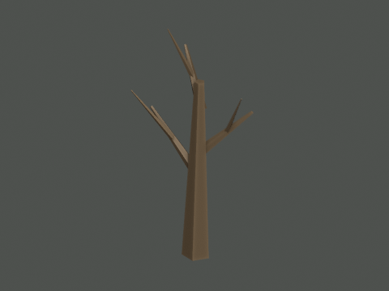
Bare branching tree · 100 triangles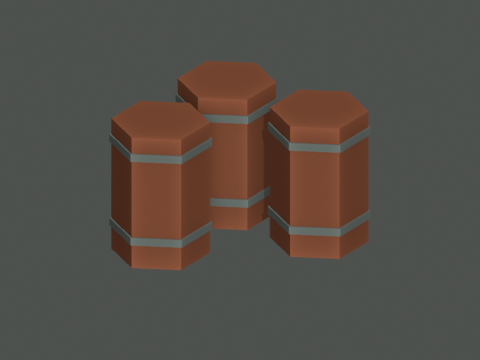
Barrel cluster · 180 triangles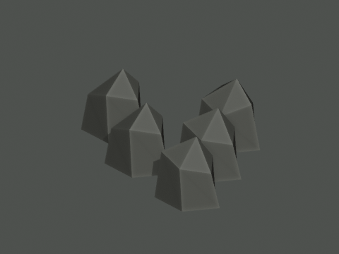
Boulder group · 90 triangles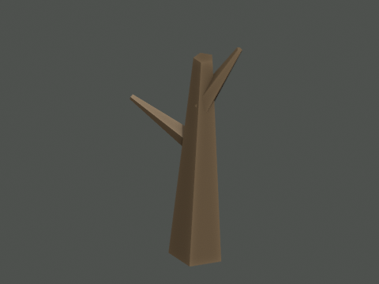
Broken snag · 48 triangles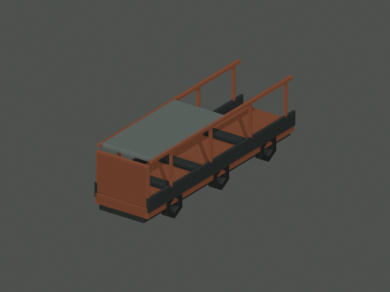
Burned bus · 516 triangles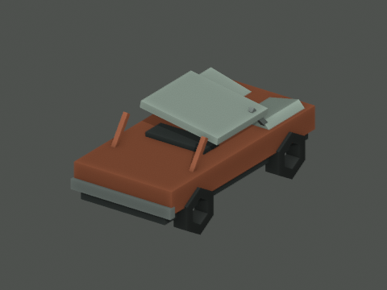
Crushed car · 316 triangles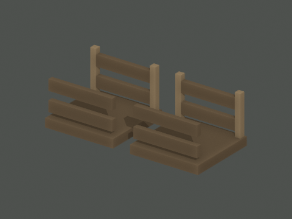
Broken crates · 168 triangles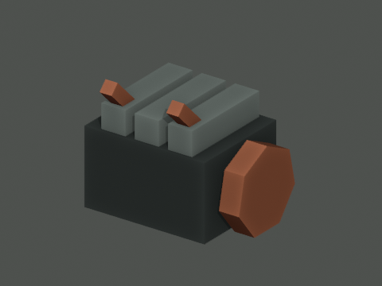
Engine machinery · 96 triangles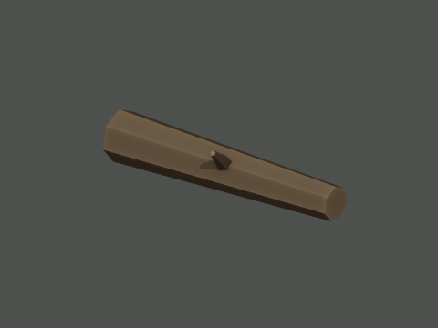
Fallen trunk · 64 triangles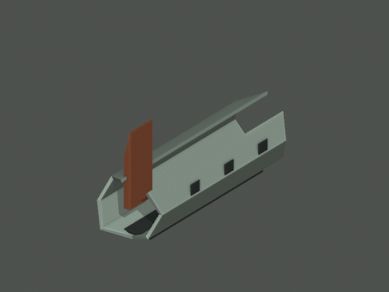
Broken aircraft fuselage · 156 triangles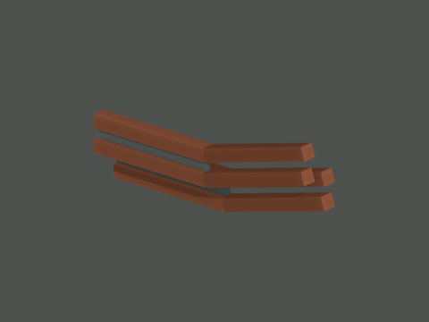
Bent girders · 120 triangles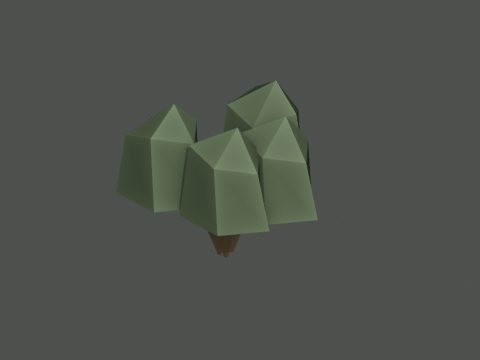
Sparse green shrub · 120 triangles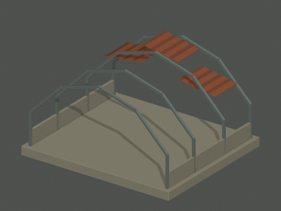
Ruined hangar · 528 triangles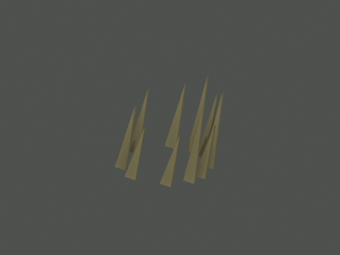
Hardy grass clump · 88 triangles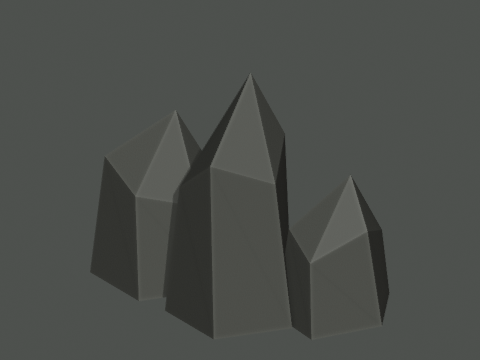
Jagged outcrop · 54 triangles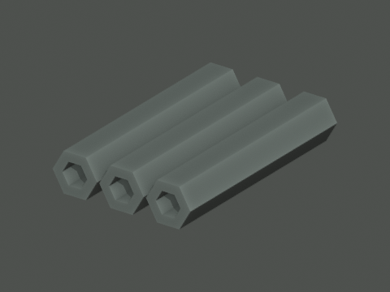
Pipe bundle · 144 triangles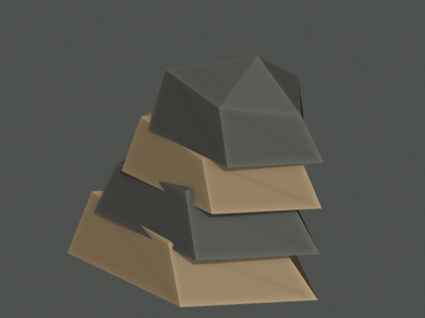
Layered rock stack · 72 triangles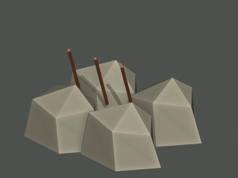
Concrete rubble with rebar · 108 triangles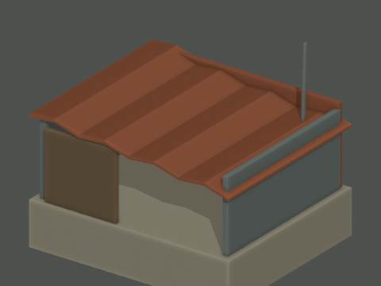
Scrap shack · 140 triangles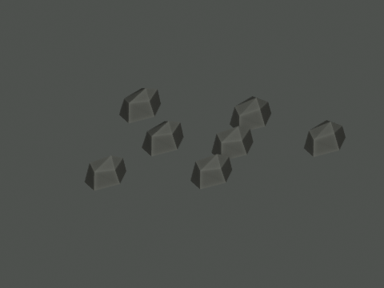
Scree patch · 126 triangles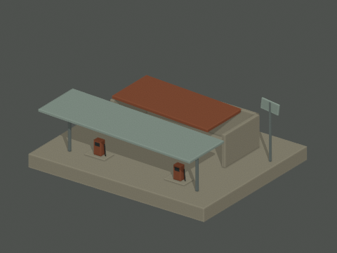
Roadside service station · 216 triangles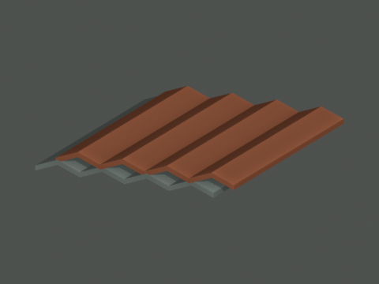
Corrugated sheet pile · 136 triangles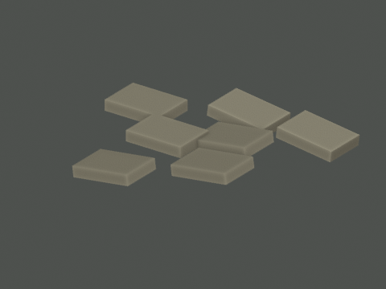
Fractured concrete slab field · 84 triangles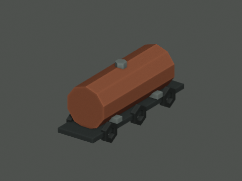
Tanker trailer · 380 triangles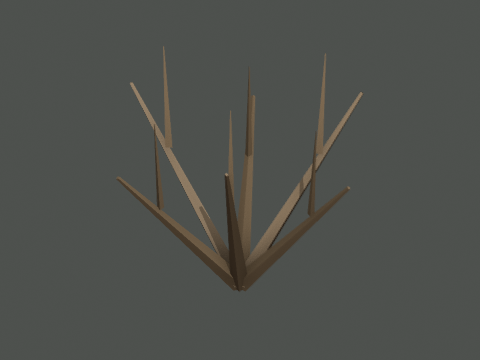
Thorn scrub · 120 triangles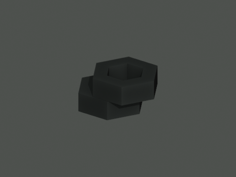
Tire pile · 96 triangles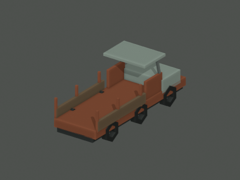
Cargo truck · 480 triangles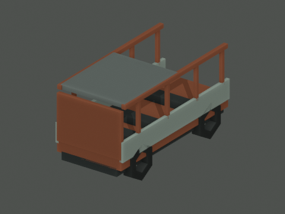
Stripped van · 420 triangles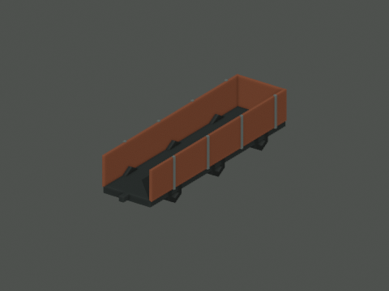
Freight wagon · 456 triangles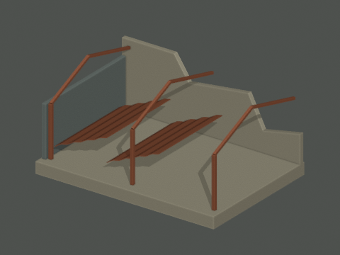
Collapsed warehouse · 296 triangles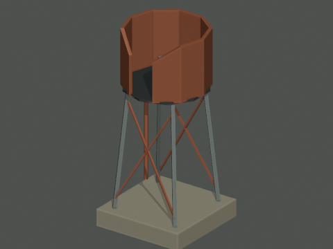
Damaged water tower · 238 triangles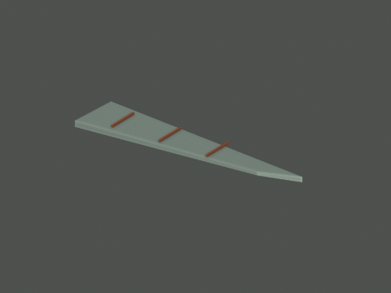
Detached wing · 48 triangles